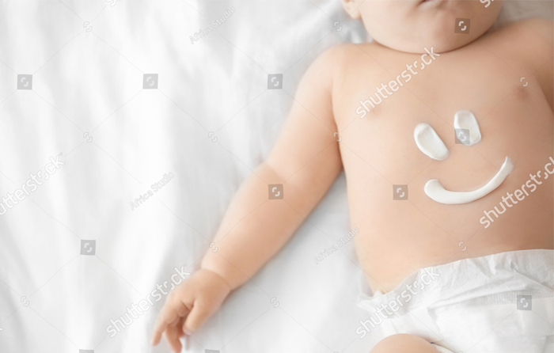

Читайте также

< Назад
Как правильно выбирать средство для лечения атопического дерматита
Атопический дерматит – распространенное хроническое заболевание, характеризующееся аллергическим воспалением кожи. Главные его симптомы – зуд, покраснение и высыпания на коже.
Факты
81 %
детей, у кого оба родителя страдают атопическим дерматитом, развивается эта болезнь
56 %
детей, у кого болен один из родителей, также развивается атопический дерматит
Считается, что основным фактором формирования такого вида дерматита является наследственная предрасположенность. На эту тему проводились исследования, в результате которых было доказано, что атопический дерматит развивается у 81% детей, у кого оба родителя страдают этой болезнью, и у 56% - если болен один из родителей . Факторов, влияющих на развитие заболевания, довольно много.
Среди них: осложненное течение беременности,
курение во время вынашивания ребенка, нарушения в питании, резкая перемена климата, аллергия, стресс, нарушения экологии и среды обитания .
Атопический дерматит крайне важно вовремя распознать и начать с ним бороться: несвоевременное лечение может привести к переходу начальной стадии болезни в стадию выраженных патологических изменений на коже .
Как лечить атопический дерматит
Лечение необходимо начать с посещения врача: самостоятельно правильно установить степень тяжести заболевания и выявить его причины невозможно. Основными способами лечения атопического дерматита являются :
 противовоспалительная терапия высыпаний на коже;
противовоспалительная терапия высыпаний на коже;- исключение аллергенов (в первую очередь пищевых) с назначением диетотерапии и контролем неблагоприятных факторов внешней среды;
- применение антигистаминных препаратов;
- лечение сопутствующих заболеваний (например, патологии органов ЖКТ, нормализация метаболизма, состояния нервной системы);
- восстановление и поддержание барьера кожи.е;
Лечение атопического дерматита назначается в зависимости от степени тяжести заболевания . Так, для больных легкой формой атопического дерматита рекомендуется исключение провоцирующих заболевание веществ и продуктов и использование препаратов для увлажнения кожи. Такие препараты называются эмолентами, они способны создавать защитный липидный слой на поверхности кожи.
Для больных среднетяжелым атопическим дерматитом проводится противовоспалительная наружная терапия с использованием следующих препаратов
- – топических наружных гормональных препаратов.
- – нестероидных препаратов (топических ингибиторов кальциневрина).
Для больных среднетяжелым атопическим дерматитом проводится противовоспалительная наружная терапия с использованием следующих препаратов:
- – топических наружных гормональных препаратов.
- – нестероидных препаратов (топических ингибиторов кальциневрина).
Для больных среднетяжелым и тяжелым атопическим дерматитом назначают препараты посильнее: как правило, это наружные гормональные препараты с умеренной или высокой активностью.
Важно помнить, что нельзя откладывать начало лечения топическими наружными гормональными препаратами, поскольку воспаление в коже при атопическом дерматите есть всегда, даже если кожа внешне здорова. Если откладывать лечение часто развиваются осложнения, что ведет к увеличению количества лекарств, которые нужны ребёнку.
Современные наружные гормональные препараты обладают благоприятным профилем безопасности (редко вызывают нежелательные явления на коже и в организме в целом). Они также могут быстро устранить зуд, воспаление и убрать неприятные высыпания с кожи. Препаратом последнего поколения является Адвантан®. Благоприятный профиль безопасности препарата можно объяснить тем, что это пролекарство – Адвантан® оказывает все свои эффекты только при наличии воспаления, а значит, если воспаления нет, риски побочных эффектов минимальны. Именно поэтому препарат разрешен детям уже с 4-х месяцев. В мире препарат применяется уже более 25 лет. Хорошая переносимость препарата не значит, что он не эффективный. Адвантан® помогает устранять неприятные симптомы заболевания – зуд, жжение, покраснение и т.д. при нанесении его на пораженную кожу всего 1 раз в день .
Важно помнить, что при появлении одного из вышеперечисленных симптомов атопического дерматита стоит обязательно обратиться к специалисту. Именно лечащий врач способен правильно выявить причины заболевания и назначить необходимое лечение.
MAT-29882-10-19
РУ П N013563/03, П N013563/02, П N013563/04, П N013563/01
-
1 – А.А. Козловский, Г.Д. Строева Атопический дерматит у детей // Проблемы здоровья и экологии. 2006. №2 (8).URL: https://cyberleninka.ru/article/n/atopicheskiy-dermatit-u-detey.
-
2 – Смирнова Г.И. Атопический дерматит у детей: управление течением болезни. Лечащий врач. 2014; 06.
-
3 – А.А. Козловский, Г.Д. Строева Атопический дерматит у детей // Проблемы здоровья и экологии. 2006. №2 (8).URL: https://cyberleninka.ru/article/n/atopicheskiy-dermatit-u-detey.
-
4 – Смирнова Г.И. Атопический дерматит у детей: управление течением болезни. Лечащий врач. 2014; 06.
-
5 – Абелевич М.М. Атопический дерматит. Первая ступень в комплексном лечении и прогнозировании атопии. РМЖ. Мать и дитя №14 от 01.07.2014. С. 1048
-
6 – Инструкция по медицинскому применению препарата Адвантан®.
Читайте также

Все претензии по содержанию данного промоционного материала, а также сообщения о нежелательныхявлениях направляются в ООО “ЛЕО Фармасьютикал Продактс” по адресу 125315 Россия, Москва, Ленинградский проспект 72, корпус 2 или по телефону +7 (495) 789 1160. Политика конфиденциальности МАТ-30065-11-19